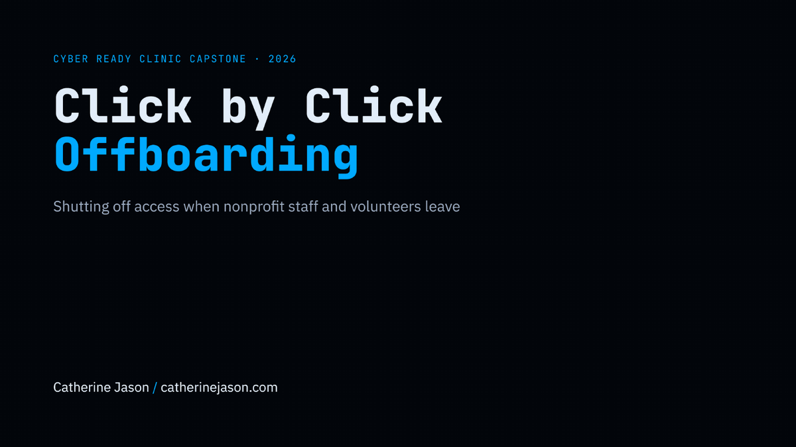
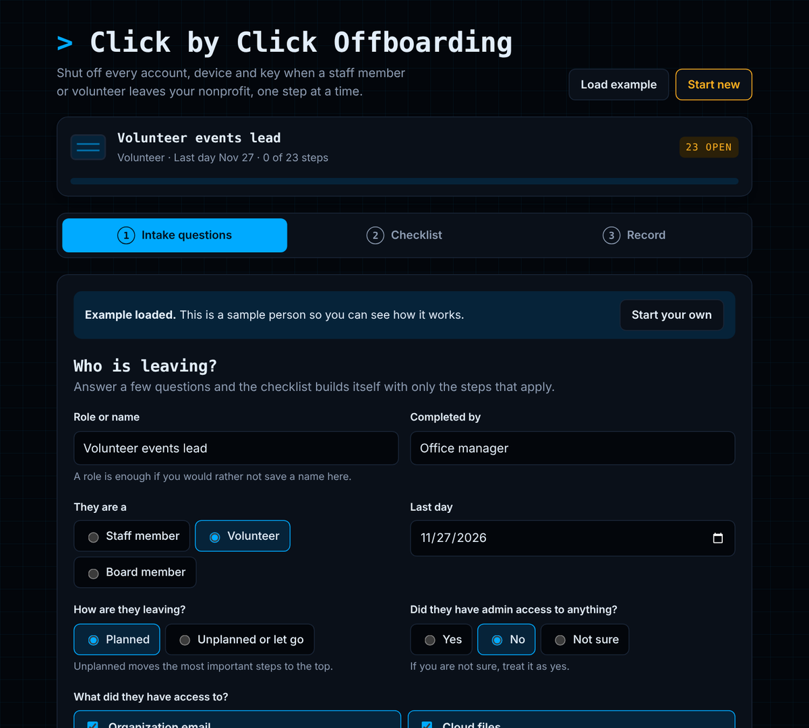
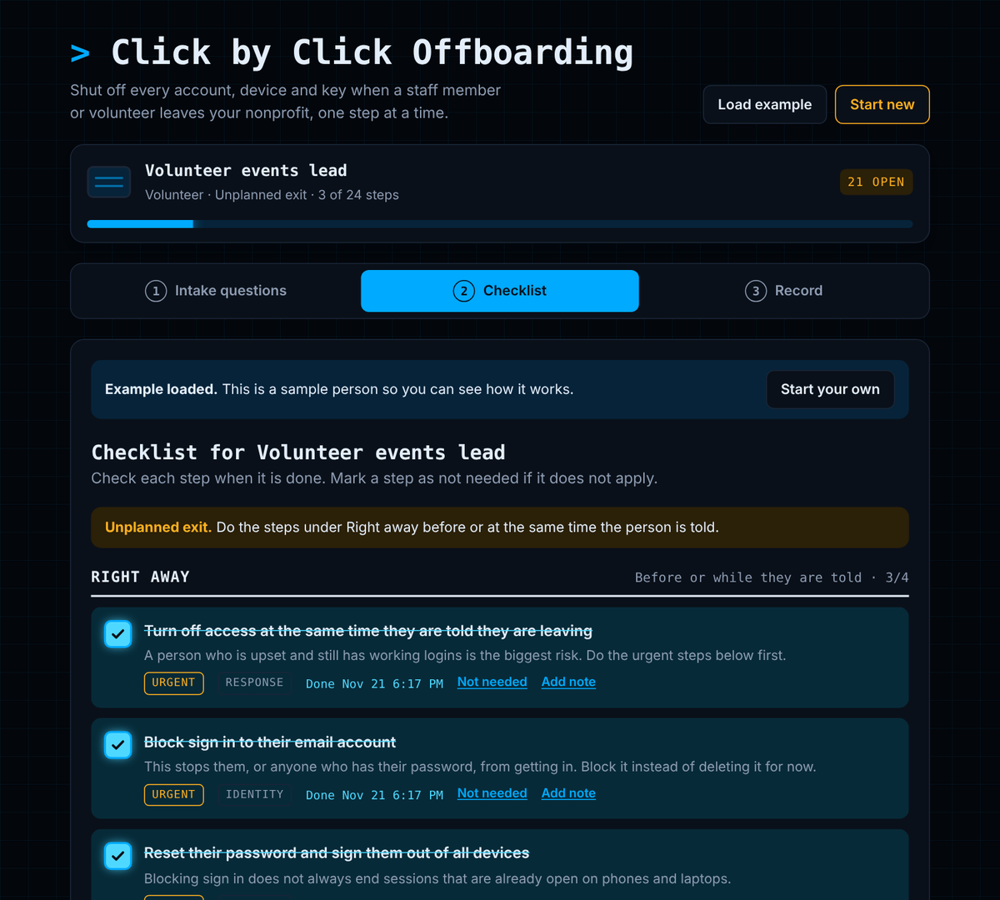
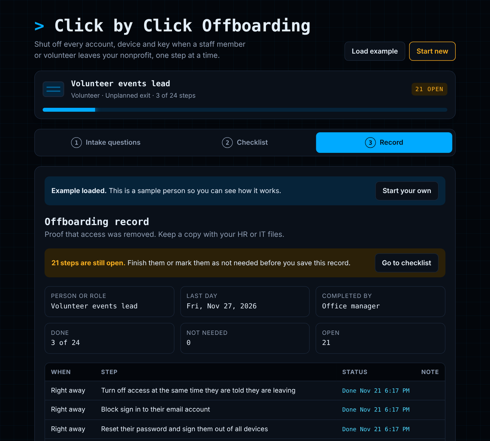
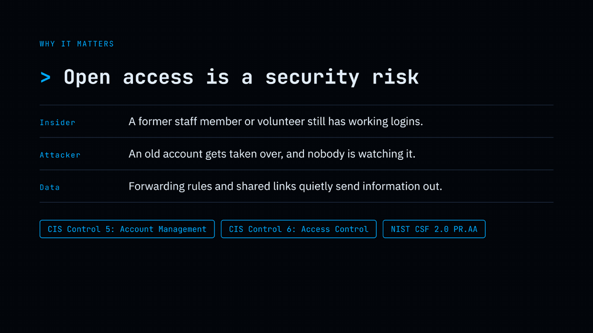

Capstone Project


Click by Click Offboarding
Case Study
The Problem
When someone leaves a small nonprofit, their accounts usually stay open. Their email still works, shared passwords don't get changed, and nobody has a list of everything that person could get into. Most of these organizations don't have an IT team, so this lands on the office manager or the director, who already has a full plate. This came up as a common gap in the assessment work we did in the clinic.
Why It Matters
- Insider: someone who left, maybe on bad terms, can still log in.
- Attacker: an old account gets taken over, and since nobody uses it anymore, nobody notices.
- Data: email forwarding rules and shared file links keep sending information out after the person is gone.
This ties to CIS Controls 5 and 6, which cover managing accounts and access, and to the Identity and Access part of NIST CSF 2.0 (PR.AA).
What I Built
Click by Click Offboarding works in three steps, right in the browser.
- Intake: who is leaving, their last day, and what they had access to.
- Checklist: only the steps that apply to that person, grouped by before, on and after the last day.
- Record: a dated record of every step for audits and cyber insurance.
If someone is let go or leaves unexpectedly, the urgent steps like removing admin rights move to the top. It's free, and nothing gets saved to a server.
What It Changes
- Access gets shut off the same day someone leaves.
- The most important steps happen first when an exit is unplanned.
- The organization has proof it was done if an auditor or insurance company asks.
Try It Live
This runs in your browser, so there is nothing to install.
An example volunteer is already loaded. Check off a few steps, then go back to the intake and switch to "Unplanned or let go" to watch the urgent steps move to the top. Finish on the Record screen to see the dated record.
I've kept improving the app since the capstone, so the live version has more in it now. The exact version I presented is saved on GitHub as capstone-v1.0.
Open the Live AppScreenshots
The capstone version (v1.0)




What Came Next
Since the capstone
My last slide listed three ideas for the next version: an onboarding side, a saved access list for each person, and reminders for the 30 day check. I built the first two in Click by Click Access, a free and open source version with Onboarding, Offboarding and Inventory tabs that work together.
The offboarding app itself now also has:
- A device inventory with serial numbers, OS, encryption and patch dates, plus Excel import and export
- Steps that change by OS, like turning off Find My on Apple devices before a wipe
- Checkboxes for health information, card payments, student records and legal holds
- A "Why this matters" note on every step with NIST CSF 2.0, NIST SP 800-88 and CIS Controls references